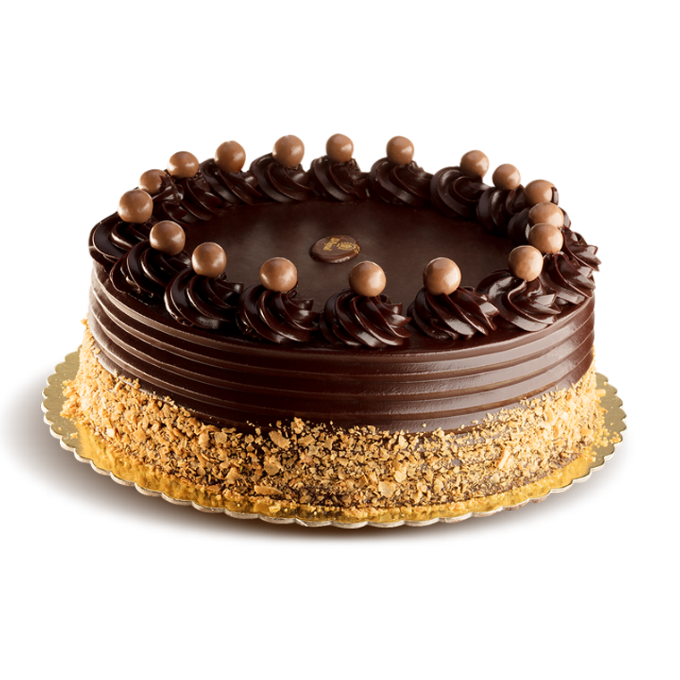

Date added: 05 Jan
A German Chocolate Cake is an impressive looking cake. Three layers of moist chocolate cake that are stacked, one on top of another, with a sweet and gooey caramel flavored frosting, laced with coconut and pecans, in between. This is not your typical layer cake that is covered entirely in frosting so you are left guessing what type of cake lies beneath. A German Chocolate Cake leaves its sides bare so you can see both the frosting and the beautiful chocolate cake.

So what is the history of the German Chocolate Cake? Its origin is hard to pinpoint but we do know it is all American. Richard Sax in Classic Home Desserts says this cake was being made in the 1920's and eventually became popular nationwide after a recipe appeared in a 1957 food column of a Dallas newspaper. While the name "German" Chocolate Cake seems to suggest a tie to Germany, the name refers to the type of chocolate used in the cake which, in turn, is named after the Walter Baker & Company employee, Samuel German, who developed the chocolate in 1852. German's® Sweet Chocolate is a semi sweet baking chocolate that has a mild flavor and is much sweeter than other semi sweet chocolates (it tastes like a candy bar). Baker's® sells this chocolate and it is sold on the baking isle of most grocery stores.
So, let's move on to the making of a German Chocolate Cake. There are a lot of recipes for this cake with the most popular being the one on the box of Baker's® German's® Sweet Chocolate. While this is an excellent recipe it seems redundant for me to give you that exact same recipe. So I was very pleased when I found a German Chocolate Cake recipe in Matt Lewis & Renato Poliafito excellent cookbook "Baked". I must admit I did tweak the recipe a bit, but what I love about this cake is that it replaces the German Chocolate (as I find this chocolate a little too sweet for my taste) with regular semi-sweet chocolate along with unsweetened cocoa powder. So we end up with a cake that has a rich chocolate flavor that is not overly sweet. The cake can be frosted with a variety of icings, but for a German Chocolate Cake it needs the classic Coconut Pecan Frosting. This is a baked frosting that heats butter, cream or evaporated milk, sugar, and egg yolks just until thickened. The mixture is removed from the heat and vanilla extract, coconut, and toasted and chopped pecans are folded in. The frosting is left to cool until thick enough to spread between, and on top of, the cake layers. The filled and frosted cake can be served immediately or stored at room temperature for a few days. It can also be refrigerated.
A few extra notes on ingredients. Cake flour is made from a soft wheat flour and gives this cake a tender and delicate texture. If you cannot find it you can make your own. One cup cake flour (120 grams) can be substituted with 3/4 cup (100 grams) all-purpose (plain) flour plus 2 tablespoons (20 grams) "packed" cornstarch (corn flour). I like to use Dutch processed unsweetened cocoa powder in the recipe. But if you cannot find it you can use regular unsweetened cocoa powder. The recipe does call for one cup (240 ml) lukewarm coffee. You can substitute with water if you do not want a coffee flavored cake. Buttermilk helps to make this cake wonderfully tender. If you cannot find buttermilk you can make your own buttermilk by stirring 1 tablespoon of white distilled vinegar, cider vinegar, or lemon juice into 1 cup (240 ml) of whole or reduced fat milk. Let stand at room temperature for about 10 minutes before using. Another option is to use buttermilk powder which can be found in some grocery stores or in specialty food stores. For the frosting you can use either evaporated milk, light cream or heavy cream. The coconut can be sweetened or unsweetened, keeping in mind that if you use unsweetened the frosting will not be as sweet tasting. I have used shredded sweetened coconut in the picture, but you can also use flaked coconut.

German Chocolate Cake: Preheat oven to 350 degrees F (180 degrees C) and place oven racks in the upper and lower third of the oven. Lightly butter and flour (or spray with a nonstick vegetable/flour spray), and line the bottoms of three - 8 x 2 inch deep (20 x 5 cm) round baking pans with parchment or wax paper.
In a heatproof bowl, placed over a saucepan of simmering water, melt the chocolate. Remove from heat and let cool to room temperature.
In a separate bowl, sift the flour, cocoa powder, baking powder, baking soda, and salt.
In a small bowl, combine the coffee (or water) and buttermilk. In the bowl of your electric mixer, or with a hand mixer, beat the butter until smooth and creamy. Add the sugar and continue beating until the mixture is fluffy (this will take about three to five minutes). Scrape down the sides of the bowl as needed. Add the eggs, one at a time, mixing well after each addition. Add the vanilla extract and beat to combine. Then add the melted chocolate and beat until incorporated.
Add the coffee/buttermilk mixture and flour mixtures in three additions, beginning and ending with the flour mixture. Beat only until the ingredients are mixed together.
Divide the batter evenly among the three prepared pans and smooth the tops. Bake for about 30 - 35 minutes or until a toothpick inserted in the center comes out clean and the tops spring back when lightly pressed. (I like to rotate the pans about halfway through baking to ensure even baking.) Remove from oven and place on a wire rack to cool for about 15 minutes. Butter or lightly spray with a non stick vegetable spray a wire rack before inverting the cakes onto the rack to prevent the cakes from sticking. Cool the cakes completely before frosting.
Coconut Pecan Frosting: Preheat the oven to 350 degrees F (180 degrees C). Place the pecans on a baking sheet and bake for about 8-10 minutes or until lightly browned and fragrant. Remove from oven, cool, and then chop fairly fine.
In a medium saucepan, combine the sugar, milk, egg yolks, butter, and salt. Cook over medium heat, stirring constantly, and when the mixture begins to boil and thicken, remove from heat (about 5 minutes). Stir in the chopped pecans, coconut, and vanilla extract. Let cool until spreadable (about 30-60 minutes).
To Assemble: Place one layer of cake (top facing down), on your serving plate, and cover with one third of the frosting. Place the second layer of cake, onto the first cake layer and frost with another one-third of the frosting. Then add the third cake layer and frost the top of the cake with the remaining frosting (sides of cake are left bare). The finished cake can be stored at room temperature for a 2-3 days or it can be refrigerated.
Serves 14-16 people.
